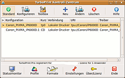
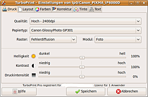

TurboPrint
Ausbaufähige Anleitung
Dieser Anleitung fehlen noch einige Informationen. Wenn Du etwas verbessern kannst, dann editiere den Beitrag, um die Qualität des Wikis noch weiter zu verbessern.
Anmerkung: Eventuell noch etwas zu den grafischen Tools von Turboprint erwähnen?
Dieser Artikel wurde für die folgenden Ubuntu-Versionen getestet:
Ubuntu 16.04 Xenial Xerus
Ubuntu 14.04 Trusty Tahr
Zum Verständnis dieses Artikels sind folgende Seiten hilfreich:
Wenn es für den neuen Drucker keine freien Treiber  gibt oder die Treiber des Druckerherstellers nicht funktionieren wie sie sollen, ist vielleicht TurboPrint einen Versuch wert, bevor man auf einer Fehlinvestition sitzen bleibt oder andere frustrierende Lösungen ausprobiert...
gibt oder die Treiber des Druckerherstellers nicht funktionieren wie sie sollen, ist vielleicht TurboPrint einen Versuch wert, bevor man auf einer Fehlinvestition sitzen bleibt oder andere frustrierende Lösungen ausprobiert...
Einleitung¶
TurboPrint ist ein kommerzielles proprietäres Treiberpaket der deutschen Firma ZEDOnet GmbH. Unterstützt werden Drucker der Marken Canon, Hewlett-Packard, Brother und Epson. Eine vollständige Liste der aktuell unterstützten Drucker  , das Handbuch und verschiedene Screenshots können unter www.turboprint.de eingesehen werden. Zum gründlichen Testen läuft TurboPrint ab Version 2.* 30 Tage als uneingeschränkte Demoversion.
, das Handbuch und verschiedene Screenshots können unter www.turboprint.de eingesehen werden. Zum gründlichen Testen läuft TurboPrint ab Version 2.* 30 Tage als uneingeschränkte Demoversion.
Installation¶
Voraussetzungen¶
TurboPrint benötigt GTK+ 2.*, wenn die Grafische Benutzeroberfläche verwendet werden soll. TurboPrint läuft auch ohne GTK, kann dann aber ausschließlich über das Terminal[1] (ohne grafische Benutzeroberfläche) installiert und konfiguriert werden.
Auf der Webseite kann man das angebotene .deb-Paket herunterladen, das wie gewöhnlich installiert wird.[2]
Hinweis!
Fremdpakete können das System gefährden.
|  |
| TurboPrint Control, Version 2.x.x |
Die Druckertreiber stehen nach der Installation für CUPS zur Verfügung. Bis Version 1.9.x können alternativ Drucker per Konsole entweder mit xtpsetup (grafische Oberfläche) oder ohne grafische Oberfläche mit tpsetup eingerichtet werden (beides auf Benutzer-Ebene). Mit diesen Programmen kann auch ein später erworbener Lizenz-Schlüssel aktiviert werden. Mit sudo xtpconfig können verschiedene Aufgaben, wie zum Beispiel Druckergrundeinstellungen geändert oder Wartungsaufgaben (Düsentest, -reinigung etc.) durchgeführt werden.
Ab Version 2.0 wird die Einstellung und Verwaltung der Druckertreiber und -aufträge über die Programme "TurboPrint Monitor" und "TurboPrint Control" vorgenommen; außerdem wird standardmäßig beim Booten ein Daemon gestartet, sodass der Zugriff ohne Root-Rechte möglich ist.
Verwendung¶
|  |
| Einstellungen, Version 2.x.x |
Mit "TurboPrint Control" lassen sich verschiedene Drucker verwalten, sowie Druckerkonfigurationen für unterschiedliche Einsatzzwecke (z.B. Photodruck, CD-Druck, Text, Entwurf etc.) erstellen. Außerdem kann auch von hier ein Zugriff auf alle Funktionen zur Einstellung des Drucks erfolgen.
Im "TurboPrint Monitor" stehen neben der Überwachung und Ausführung der anstehenden Druckaufträge im Unterpunkt Druckereinstellungen sehr umfassende Anpassungsmöglichkeiten zur Verfügung. Es können differenzierte Einstellungen zum verwendeten Medium, Farbraum und -korrekturen, zu Tintenverbrauch, -balance und -sättigungsgrenzen, Kontrast, Helligkeits- und Farbanpassungen sowie zur Textwiedergabe vorgenommen werden. Außerdem steht eine "Toolbox" zur Verfügung, mit der Wartungsarbeiten am Drucker durchgeführt werden können.
USB-Drucker an Fritz!Box einrichten¶
Um einen Drucker an der USB-Schnittstelle einer Fritz!Box einzurichten, muss in der Konfiguration des Kontrollzentrums bei der Neueinrichtung "andere Drucker" und dort im Dropdown-Menü "andere (CUPS URI)" ausgewählt werden. Als Eingabe für "URI" wird (wenn die IP der Box nicht verändert wurde) "socket://192.168.178.1:9100" eingetragen. Die Fernwartungseinstellung darf auf der Box allerdings nicht aktiviert sein! Bidirektionale Funktionen (Auslesen des Tintenstandes etc.) funktionieren so allerdings nicht.
Probleme und Lösungen¶
Wenn man in der Druckvorschau von TurboPrint den Druckvorgang abbricht, kann es vorkommen, dass Temporärdateien nach dem Muster gs_xxxxx im Verzeichnis /tmp/ zurückbleiben, die nur vom Root-Benutzer entfernt werden können - beim Überspringen von Seiten des Druckauftrages hingegen werden die Dateien anstandslos gelöscht. Das kann dann zu Problemen führen, wenn der Platz auf dem Speichermedium begrenzt ist. Nach einem Neustart sind die Dateien wieder gelöscht.
- Erstellt mit Inyoka
-
 2004 – 2017 ubuntuusers.de • Einige Rechte vorbehalten
2004 – 2017 ubuntuusers.de • Einige Rechte vorbehalten
Lizenz • Kontakt • Datenschutz • Impressum • Serverstatus -
Serverhousing gespendet von